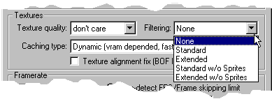
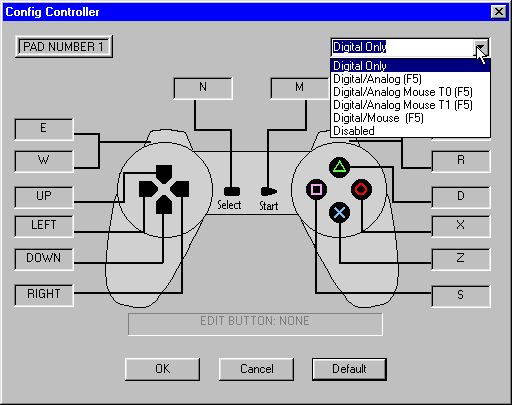

把PS1游戏塞进现代屏幕，ePSXe上手这三天我踩过的坑
怀旧党必备的PlayStation 1模拟器，界面老但功能全。从画质调优到多盘切换，这篇讲一个新手从装完到跑通FF7踩过的那些弯弯绕。
为什么我又回去装了个PS1模拟器
说实话我对模拟器一直有偏见——感觉就是给那些"不想花钱又想玩"的人准备的。直到上周收拾旧硬盘的时候翻出了一张灰扑扑的《最终幻想 VII》压盘，封面已经脱胶了，突然就想再看看克劳德那张棱角分明的脸。
PS1实机现在二手市场炒得离谱，一台成色还行的要小两千，光盘更难找。然后朋友推荐了ePSxe官网，说这货是PS1模拟器里最稳的。我抱着试试看的心态装了一个，没想到从下载到跑起来折腾了将近三个小时。这三天下来感触挺多，写点真实的东西。
初印象：界面真的是上个世纪的
安装包从ePSxe下载拿的——一个.exe双击下一步就行，没什么花里胡哨的。安装完双击ePSxe.exe弹出来的第一个窗口让我愣了一下：灰底黑字的菜单，工具栏还是经典的90年代Windows风格，没有Logo、没有启动动画，就五个主菜单Run、Config、Options、File、Help，看着像个系统管理工具。
说实话第一反应是"这能用吗"。但转念一想，模拟器这玩意儿拼的是内核不是UI，界面丑点无所谓。
然后就是最关键的一步——配置BIOS。PS1模拟器需要一份索尼官方的BIOS文件才能启动，ePSxe本身不带，得自己找。这一步卡了我二十分钟，最后在贴吧的精华帖里找到一个整合包。Config → BIOS里把那个scph1001.bin（或者scph7502，版本区别不大）指过去，确定。

跑起来了，但画面像打了马赛克
加载FF7的.iso文件，Run → ISO → 选文件，然后——黑屏？
等了大概三秒，出现画面了，但整个屏幕像是被打了一层厚厚的马赛克，克劳德的头发根根都是大方块，战斗界面的UI边框上全是锯齿。这就是PS1原生分辨率512×448的真实面貌。
这时候才意识到，"能跑起来"和"能看"之间，差了一个画质调优的距离。
Pete插件：画质提升的核心
ePSxe自带好几个视频插件，我试了一圈，Pete OpenGL2 是目前公认效果最好的。Config → Video → 下拉框里选 Pete OpenGL2 → Configure，打开一个密密麻麻的设置面板。
我最先调的是内部分辨率。下拉框里一堆倍率：1x、2x、3x、4x、6x、8x。原生是512×448，2x就是1024×896，3x是1536×1344，8x直接到4096×3584——4K级别的渲染。

我显卡是3060，一开始傻乎乎拉到8x，画面确实锐利，但过场动画直接掉帧掉到PPT。后来翻了ePSxe文档才搞明白，2x是性价比最高的档，GPU压力只有4x的1/4，绝大多数游戏能稳定60fps。拉到2x之后画面一下子就清晰了，克劳德的脸不再是一团色块。
黑屏花屏？Special Fixes救了我
调完分辨率重新进游戏，好嘛——过场动画全黑屏，只有声音。搜索了一圈才知道Pete插件有个叫Special Game Fixes的选项卡，专门对付各种奇奇怪怪的画面bug。
FF7的过场动画黑屏，解决办法是开Disable Framebuffer Readbacks——PS1有些游戏会把当前帧画面当作下一帧的纹理来读取，模拟器默认禁用这个功能来提速，但FF7的过场恰恰依赖它。勾上那个选项，重启模拟器，过场动画出来了。
但随之而来的是新问题：画面出现彩色条纹。关掉那个选项，开Full VRAM Texture Cache试试？还是不行。最后我发现正确的姿势是——每次只开一个修复项，测试完再加下一个。一口气全开只会让各种开关互相打架。
折腾了大概半小时，画面终于正常了。说实话这个Special Fixes面板做得挺反人性的，一堆英文开关没有中文说明，全靠碰运气。
键盘映射：默认布局居然挺合理
没手柄也没关系，ePSxe自带了一套完整的键盘映射。打开Config → Game Pads → Port 1，面板左侧是PS1手柄的按键图标，点一下图标再按键盘上的键就能重新映射。
默认布局我先看了一眼，感觉挺顺手的：方向键就是方向键，Start是Enter，Select是Backspace，四个功能键△○□×分别映射到W、F、D、X——这几个键凑在左手小拇指区域，按起来不别扭。扳机键R1/L1是E和Q，R2/L2是R和A，也都在左手能轻松覆盖的范围里。

说实话这套默认映射比我预想的要合理，很多模拟器默认给的键位要么分布太散要么全堆在一排，ePSxe的还算有逻辑在里面。游戏里按F5还能实时切换手柄类型，纯数字方向键、数字+模拟摇杆、鼠标当摇杆三种模式随便切。
多盘游戏换盘：FF7的三张盘差点让我丢档
这是我这三天踩的最大的坑。FF7是三张盘的，剧情推进到一定时候会弹"请插入Disc 2"。我第一次遇到的时候直接关模拟器然后重新打开加载Disc 2——好嘛，存档丢了。
后来才知道正确的换盘流程：
- 先存一个记忆卡存档，不是即时存档，是游戏内的Memory Card存档——这是安全网
- 看到游戏提示换盘，按Esc回主菜单，别关模拟器
- Run → ISO，选Disc 2的.cue文件（.bin/.cue格式的光盘镜像必须选.cue，选.bin会报错）
- 模拟器自动加载新光盘，游戏会检测到切换，按Start继续就行
我折腾过程中还遇到了.cue文件路径不对的问题——原来那个.cue里写的是相对路径，但我把Disc 2的文件夹挪位置了，导致加载黑屏。用记事本打开.cue文件，把里面那行 FILE "xxx.bin" BINARY 里的路径改成正确的就行。
如果是多盘游戏的重度玩家，还有个推荐：把多盘转成一个.pbp文件。用PSX2PSP工具把三张Disc全部导入，转成单个.pbp，换盘的时候按手柄L1+L2+R1+R2+Start+Select就能呼出换盘菜单，零中间环节，也不会有路径错的问题。
适合谁，不适合谁
三天用下来，总结一下：
适合的人：PS1时代有情怀的玩家，想低成本回顾经典又不想入二手实机坑的；或者是模拟器新手，想从PS1开始接触模拟器生态的。ePSxe是目前社区资源最全的PS1模拟器，网上教程、配置包、BIOS都好找。
不太适合的人：追求极致画质的发烧玩家——ePSxe的核心是稳定兼容，不是画质拉满，想要RetroArch配合各种shader的效果还是得走另一条路。还有就是完全没接触过模拟器的纯新手，那些Pete插件的英文选项和各种修复开关可能会让你劝退。
收尾
说实话这三天的体验有点像当年装第一个Linux发行版——折腾但每一步都有收获。从黑调到能玩，从马赛克到看得过去的画质，中间踩的坑让我对PS1模拟器的底层逻辑多了些理解。现在克劳德又能在米德加的风雪里跑起来了，这感觉还挺妙的。顺带说一句，ePSxe的这套整理资料我分别同步到了三个代码仓库里做备档，GitHub一份、Gitee一份给国内访问更稳的朋友，GitCode也传了一份。